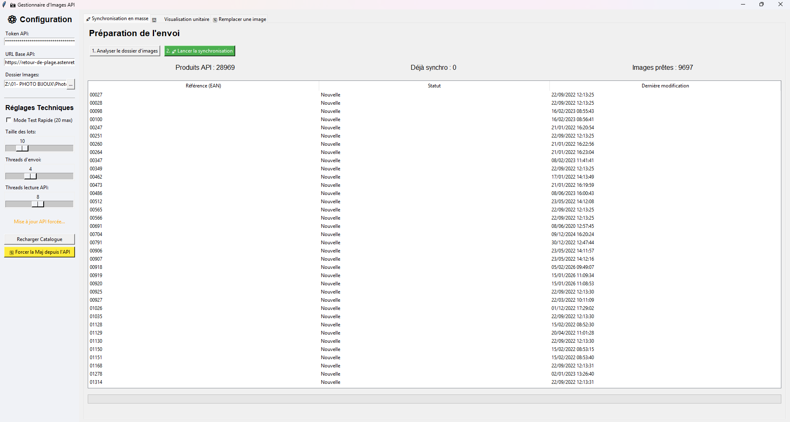

🌊 La Science des Données au service d'une bijouterie unique en son genre
Retour de Plage est une bijouterie artisanale française qui puise son inspiration dans l'univers marin et l'esprit des vacances. Basée sur la côte atlantique, l'entreprise conçoit et fabrique des bijoux uniques à partir de matériaux naturels et recyclés, comme les coquillages, le bois flotté ou les perles de verre. Chaque création reflète un style à la fois élégant et décontracté, fidèle à l'identité de la marque : capturer la beauté simple et authentique des bords de mer. Engagée dans une démarche responsable, Retour de Plage valorise le savoir-faire local et la production durable, tout en cultivant un lien fort avec ses clients à travers des collections personnalisées et poétiques.
🚀 Missions


